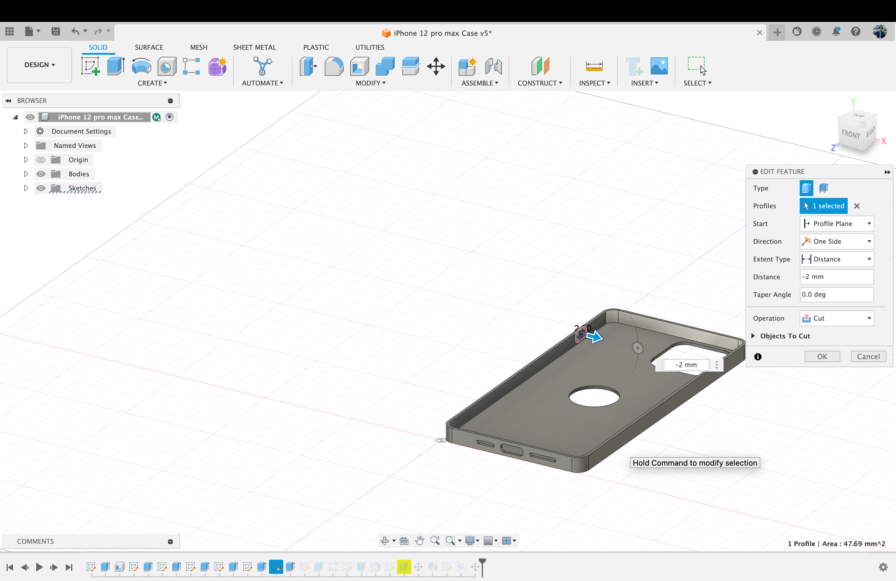
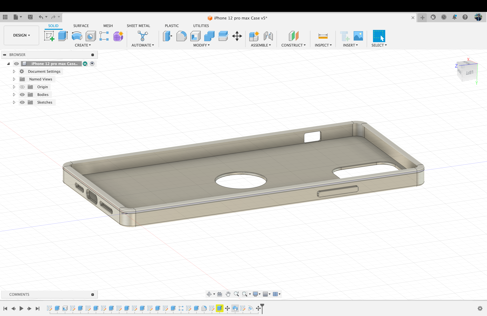
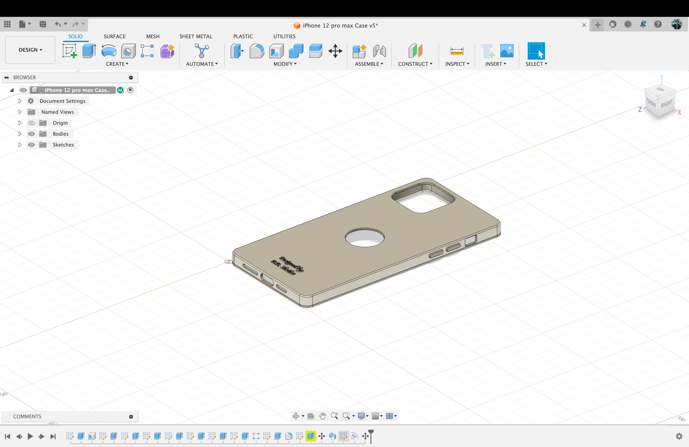

Creating a protective case for iPhone 12 pro max
We are going to create fusion 360 software to create a protective case for iPhone 12 pro max. The process is shown step by step down below.
Images:

Image 1: Creating a new sketch with a “2 point rectangle” tool.

Image 2: Using Fillet tool to make the sketch curved.

Image 3: Using Extrude tool to give it a 3D box shape of the sketch.

Image 4: Using Shell tool to create the 3D box a shell.

Image 5: Using “Extrude” tool to cut a hole for the cameras.
Image 6: Creating small holes for action Button and apple logo of the phone.

Image 7: Making buttons with extrude tool.

Image 8: Making the edges smooth and curvy using Fillet tool.
Image 9: Creating Support for the phone using “Sweep” tool.
Image 10: Leveling text on the body using Text sketch and Emboss tool.

Image 11: : Coloring the Buttons with “Appearance” tool.